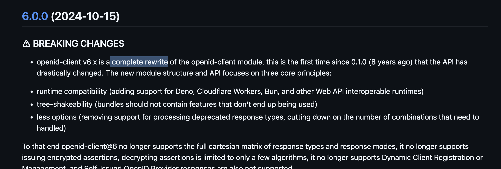
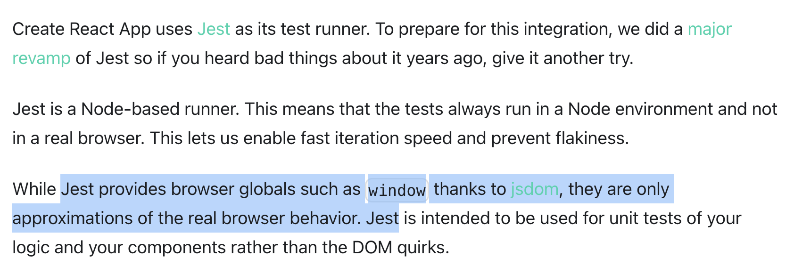

Writing Good Unit Tests
January 23, 2026
January 23, 2026
In my first job as a software engineer the project I was working on grew
out of control. As often happens, use cases were added without proper
refactoring and with more users we were drowning in support tickets and
nothing seemed to work. It was clear we needed to push for quality so we
started adding unit tests.
The tech lead at the time mandated high test coverage. But here's the
reality:
writing good unit tests after the code is done is really hard. You start chasing coverage which becomes a
vanity metric instead of prioritizing
deployment confidence and behavioral integrity.
Stop strictly mirroring your src/ folder in your
tests/ folder. Keep asking yourself:
Can I refactor the internal logic without touching the test
suite?
If the answer is no, you are testing implementation details. You are
testing the structure, not the behavior. This is very
common when you retrofit tests onto an existing code base, looking for
line coverage rather than confirming business logic.
/* cart.js */
export function applyDiscount(subtotal) {
return subtotal > 100 ? subtotal * 0.9 : subtotal;
}
export function calculateTotal(items) {
let total = items.reduce((sum, item) => sum + item.price, 0);
return applyDiscount(total);
}
/* cart.test.js */
import * as cart from "./cart.js";
// ❌ Tests the internal function
it('should apply a 10% discount for orders over 100', () => {
expect(cart.applyDiscount(110)).toBe(99);
});
// ✅ Better, test the discount behaviour is applied when calculating the cart total
it('should calculate total with discount for high value carts', () => {
const items = [{ price: 50 }, { price: 60 }];
expect(cart.calculateTotal(items)).toBe(99);
});
By testing the public interface, you avoid exporting the
applyDiscount function.
Never change visibility modifiers just to satisfy a test.
It is common to split the code into many technical layers like: controllers, views, stores, etc. It can be tempting to mock each of these layers and test each part independently but once again this is another way of coupling your tests to your implementation. If you are writing unit tests for a browser application try only mocking the API (network calls) and try to mimic the user with UI events to test the behaviors. You will need much less code and you will gain much more confidence in the test suite.
/* useUsers.js */
import { useState, useEffect } from 'react';
export const useUsers = () => {
const [users, setUsers] = useState([]);
useEffect(() => {
fetch('/api/users')
.then(res => res.json())
.then(data => setUsers(data));
}, []);
return { users };
};
/* UserList.jsx */
import React from 'react';
import { useUsers } from './useUsers';
export const UserList = () => {
const { users } = useUsers();
if (users.length === 0) return <div>Loading...</div>;
return (
<ul>
{users.map(user => <li key={user.id}>{user.name}</li>)}
</ul>
);
};
/* UserList.test.jsx */
import { render, screen } from '@testing-library/react';
import { UserList } from './UserList';
import * as userHook from './useUsers';
// ❌ Mocking the Internals
jest.spyOn(userHook, 'useUsers').mockReturnValue({
users: [{ id: 1, name: 'Alice' }]
});
test('renders users', () => {
render(<UserList />);
expect(screen.getByText('Alice')).toBeInTheDocument();
});
// ✅ Mock the edges (HTTP request)
global.fetch = jest.fn(() =>
Promise.resolve({
json: () => Promise.resolve([{ id: 1, name: 'Alice' }]),
})
);
test('renders users', async () => {
render(<UserList />);
expect(screen.getByText('Loading...')).toBeInTheDocument();
await waitFor(() => {
expect(screen.getByText('Alice')).toBeInTheDocument();
});
expect(global.fetch).toHaveBeenCalledWith('/api/users');
});
If you decide to replace the hook with React Query, inline the hook, or update the React version you won't need to touch this test. The test isn't brittle anymore, this brings so much peace of mind moving forward. One single test is testing both files so you need fewer tests too.
What constitutes a system edge? As we covered in this example, in a browser app your code at one edge receives user inputs and at the other edge it sends and receives HTTP requests. Any third-party service (eg: if you use Stripe for billing), time, randomness or I/O would be other examples.
A great part of the backend application is just having a layer on top of a database. If we are dogmatic we could treat the database as a system edge too, we should mock that! Be pragmatic instead: can I spin up an in-memory database which allows me to still run thousands of tests in milliseconds? Yes. Does it introduce flakiness? No, network requests are involved but inside the same machine so no latency, dropped packets, or network errors.
/* app.js */
const express = require('express');
const mongoose = require('mongoose');
const UserSchema = new mongoose.Schema({
email: { type: String, required: true, unique: true },
});
const User = mongoose.model('User', UserSchema);
const app = express();
app.use(express.json());
app.post('/signup', async (req, res) => {
try {
const { email } = req.body;
const user = await User.create({ email });
res.status(201).json({ id: user._id, email: user.email });
} catch (error) {
if (error.code === 11000) {
return res.status(409).json({ error: 'User already exists' });
}
res.status(500).json({ error: 'Internal Server Error' });
}
});
module.exports = app;
/* app.test.js */
// ❌ Mocking Mongoose
const request = require('supertest');
const mongoose = require('mongoose');
jest.mock('mongoose', () => {
const mUser = {
create: jest.fn(),
};
return {
Schema: jest.fn(),
model: jest.fn(() => mUser),
connect: jest.fn(),
};
});
const app = require('./app');
describe('POST /signup (Mocked)', () => {
test('should return 201', async () => {
const MockedUser = mongoose.model('User');
MockedUser.create.mockResolvedValueOnce({ email: 'test@example.com' });
await request(app)
.post('/signup')
.send({ email: 'test@example.com' })
.expect(201);
});
});
// ✅ In-memory database to verify the E2E behaviour
const assert = require('assert');
const request = require('supertest');
const mongoose = require('mongoose');
const { MongoMemoryServer } = require('mongodb-memory-server');
const app = require('./app');
let mongoServer;
beforeAll(async () => {
mongoServer = await MongoMemoryServer.create();
await mongoose.connect(mongoServer.getUri());
});
afterAll(async () => {
await mongoose.disconnect();
await mongoServer.stop();
});
afterEach(async () => {
await mongoose.connection.db.dropDatabase();
});
describe('POST /signup', () => {
test('should create a user and return 201', async () => {
await request(app)
.post('/signup')
.send({ email: 'leader@example.com' })
.expect(201);
const userInDb = await mongoose.model('User')
.findOne({ email: 'leader@example.com' });
assert(userInDb);
});
test('should return 409 if user already exists', async () => {
await mongoose.model('User').create({ email: 'leader@example.com' });
await request(app)
.post('/signup')
.send({ email: 'leader@example.com' })
.expect(409);
});
});
In my experience, in-memory databases have been performing great and delivering great deployment confidence compared to mocking database clients to assert queries.
Again, many engineers will be triggered by this post arguing that I'm advocating for integration tests and not unit tests. I think of automated tests on a spectrum where at one end you have fast reliable tests which don't give you a lot of confidence and on the other side slow and flaky tests which give you a lot of confidence. Whenever you can push test confidence without any relevant slowness or unreliability, go for it!
Whenever I can I like to mock the I/O calls rather than stub a third party dependency. When I implemented SSO authentication at Filestage I used the OpenId Client npm package. To ensure maximum confidence in the test implementation once I got the code working I recorded the HTTP requests involved using Nock and used those fixtures in the automated tests (similar tools can be found in other languages like VCR for Ruby).
/* fixtures.js: created automatically when recording */
exports.jwks = function () {
return nock("https://filestage-test-idp.eu.auth0.com")
.get("/.well-known/jwks.json")
.reply(200, {
keys: [
{
kty: "RSA",
use: "sig",
/* ... */
}
]
});
};
/* sso.test.js */
describe("finishLogin", function () {
it("should return user and state from response", async function () {
fixtures.jwks();
fixtures.backchannel.token();
assert.deepEqual(
await ssoService.finishLogin(
sso.connection,
fixtures.backchannel.response,
{},
),
{
state: {
iframeSupport: false,
},
user: {
email: "test-idp-openid@filestage.io",
fullName: "Test IDP OpenId",
id: "auth0|6620da84985864790ec52d49",
picture:
"https://s.gravatar.com/avatar/8e539f47059edf49f18f82096f51edf7?s=480&r=pg&d=https%3A%2F%2Fcdn.auth0.com%2Favatars%2Fte.png",
},
},
);
});
});
This really paid off as it is common in the JavaScript ecosystem to do a full rewrite of the library API breaking all the existing code:

Thanks to the confidence in the test suite I could brute-force the update to the new library with an AI agent.
Don't get me wrong there are many things Jest got right: parallel testing, mocking of modules and a familiar API. But the React ecosystem pushed for tests using jsdom:

The industry followed, and the performance penalty was immediate. Before React we were using Angular 1.x and the testing approach was to use Karma which ran a real browser to run the tests. This meant that you had access to all available real browser APIs, you could even test multiple browsers to verify compatibility. Once we started to grow our test base in Jest I noticed that some test components took several seconds to run when our whole Angular with over 2000 tests took 30 seconds to execute. This has been the biggest step back I've experienced in testing. To this day I regret this decision, thankfully alternatives are just starting to be published like Vitest latest browser mode.
Tests are a very polarizing topic, some engineers hate them and view them
as a useless chore and others couldn't work without them. I actually rely
on tests because I can execute them to verify my beliefs,
prevent bugs from being reintroduced once they have been
fixed and produce more decoupled code.
I'm all in on tests and I like
enforcing 100% coverage. At the same time coverage is a
vanity metric and can introduce incentives to create useless
tests. I see that, but it can also create incentives to
remove unnecessary branches or pieces of code just to
avoid writing tests for them. Since we introduced this habit into the team
a lot of the testing skeptics have actually found themselves in situations
where they found bugs while they were adding the tests and have changed
their opinion. A lot of useless tests were introduced for sure but this
also served as a great learning experience and the quality of our tests is
clearly improving.
Test behaviors, not implementation details. Avoid tests that mirror your code structure. Try to start with the tests first, which makes it much easier. If you want to dig deeper in that rabbit hole, look into TDD.
Can you refactor with confidence? Mock the edges of your system not your internal layers, use HTTP fixtures, in-memory databases, use a browser instead of mocking it. If your tests break every time you rename a function or move code between files, they're testing structure, not behavior.
The Ultimate Litmus Test: Can you deploy on a Friday evening? If your test suite gives you the confidence to ship at 5 PM on a Friday, you've built something valuable.